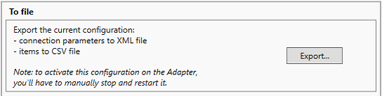
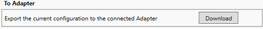

Save the Configuration
- Select System on the left.
- The Load and Download areas are available on the right.
- In the Download area, do one of the following:
- Export the configuration to a CSV file:
a. In the To File section, click Export.
b. Click Yes.
c. In the Browse for Folder dialog box, select AdditionalSW\CEI_NotifierAM_Configurator as location where you want to save the CEIConfiguration.csv file, and click OK.
NOTE: If you already saved the CSV configuration file at this location, the existing CSV configuration file is overwritten with the new configuration.
d. Stop and restart the adapter to activate the new configuration. - Override online data:
a. Connect to the adapter. For instructions, see Connect the Configurator Tool to the Adapter.
b. In the To Adapter section, click Download.